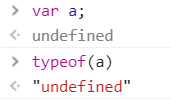
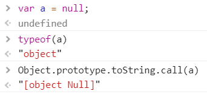
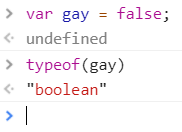
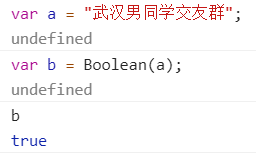
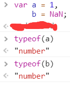
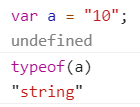
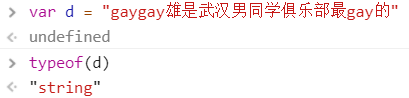
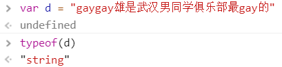

【JS-task02】JavaScript中的数据类型及方法
小课堂【武汉-263期】
分享人：邱天成
目录
1.背景介绍
2.知识剖析
3.常见问题
4.解决方案
5.编码实战
6.扩展思考
7.参考文献
8.更多讨论
1.背景介绍
JavaScript 是一种弱类型或者说动态语言。这意味着你不用提前声明变量的类型，在程序运行过程中，类型会被自动确定。这也意味着你可以使用同一个变量保存不同类型的数据：
2.知识剖析
原始类型
undefined:
undefined类型就一个值——undefined。在使用var申明变量时未对其初始化，那这个变量就是undefined。
Null:
Null类型也只有一个值——null。它表示一个空对象，一般用于确定要声明一个变量为对象，但是这个对象目前还不存在。
boolean:
Boolean类型是ECMAScript中使用的最多的一种类型，该类型有两个字面值：true和false。
转换方法：Boolean（）
Number:
Number类型用来表示整数跟浮点数，还有一个特殊的数值NaN（非数值）。
数值转换：
有三种方法：Number（）、parseInt（）和parseFloat（）
由于Number（）函数在转换字符串的时候比较复杂，而且还不合理。因此在处理整数时更常用的是parseInt（）。
parseInt(string, radix)函数，将字符串转换为整数类型的数值。它有以下规则：
- 忽略字符串前面的空格，直至找到第一个非空字符
- 如果第一个字符不是数字符号或者负号，返回NaN
- 如果第一个字符是数字，则继续解析直至字符串解析完毕或者遇到一个非数字符号为止
- 如果上步解析的结果以0开头，则将其当作八进制来解析；如果以0x开头，则将其当作十六进制来解析
- 如果指定radix参数，则以radix为基数进行解析
string:
String类型用来表示所有用双引号引起来的数据，管它以前是什么妖魔鬼怪。
 

转换字符串：
toString(radix)方法。除undefined和null之外的所有类型的值都具有toString()方法，其作用是返回对象的字符串表示。
String(mix)函数，将任何类型的值转换为字符串.
object类型
在 Javascript 里，对象可以被看作是一组属性的集合。用对象字面量语法来定义一个对象时，会自动初始化一组属性。（也就是说，你定义一个var a = "Hello"，那么a本身就会有a.substring这个方法，以及a.length这个属性，以及其它；如果你定义了一个对象，vara = {}，那么a就会自动有a.hasOwnProperty及a.constructor等属性和方法。）而后，这些属性还可以被增减。属性的值可以是任意类型，包括具有复杂数据结构的对象。属性使用键来标识，它的键值可以是一个字符串或者符号值（Symbol）。
3.常见问题
4.解决方法
5、编码实战
6、扩展思考
有哪些方法可以判断数据类型？
判断数据类型的方法：
- typeof: 返回的是string类型 判断基本数据类型：string、number、boolean、function、undefined类型,对数组、对象、null类型都统统打印的是object类型
- instanceof: 返回的是boolean类型（可判断数组类型） 判断依据：检测对象的原型链上是否有构造函数的prototype属性。
- constructor: 返回的是boolean类型(可判断数组类型)任何一个对象都有constructor属性，指向创建这个对象的构造函数
- Object.prototype.toString.call: 方法比较通用，但是繁琐
7、参考文献：
参考一： Javascript数据类型和数据结构
参考二： 《JavaScript高级程序设计》
8、更多讨论
谢谢大家
制作人： 邱天成